Consider the problem of converting a gray-scale image into a binary image, while keeping as much as possible of the visual information. The two standard techniques are thresholding and dithering.
The goal of this note is to show that thresholding and dithering are just two points on a multidimensional continuum of binarization methods, that we call linear dithering.
| 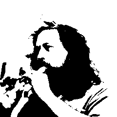 | 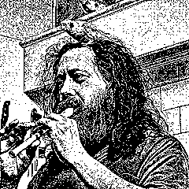 | ||
| original image | thresholding | dithering | linear dithering |
Thresholding at the right level is surprisingly effective. It is often possible to find a threshold that captures most of the relevant information in the image, even in the case of extreme lighting conditions. Yet, it is clear than for some images it will be impossible to find a single satisfactory threshold. Dithering (also called error diffusion) is aimed at representing all the possible gray levels of the original image, at the price of a small loss of resolution.
Look at this photo of a famous bongo player, for example. There is a strong spot light righto into his face, and the rest of the image is very dark. I would say that it is impossible to find a single threshold where the face and the hand are recognizable. Yet there is! And quite easy to find manually, around the value of 87, for example. We show also the results of Floyd-Sternberg dithering and the linear dithering described below. Notice that Floyd-Sternberg dithering destroys all the texture of the clothes, which is well-preserved by thresholding and linear dithering. (Too well-preserved, in the last case, as it enhances the jpeg compression artifacts of the original.)
plambda bongos.jpg "87 > 255 *" -o bongos-bin.png dither bongos.jpg bongos-dit.png plambda bongos.jpg x,l | blur z 0.25 | plambda - '0 < 255 *' -o bongos-lin.png
We can pre-process gray-scale images before dithering them. We consider two pre-processings: a contrast change by a function of the form $x\mapsto\tanh(\lambda x)/\tanh(\lambda)$, and a linear filtering of the original image that enhances its contrast. For simplicity, here we assume that our input images are of zero mean and take values on $[-1,1]$.
For the contrast change, notice two things. First, the $\lambda$-scaled $\tanh$ tends to a step function as $\lambda\to\infty$, and to the identity on $[-1,1]$ as $\lambda\to0$. Second, dithering a binary image produces exactly the same image. Thus, just by composing the dithering with a contrast change, we obtain a one-parameter family of methods that contains pure dithering and pure binarization as particular cases.
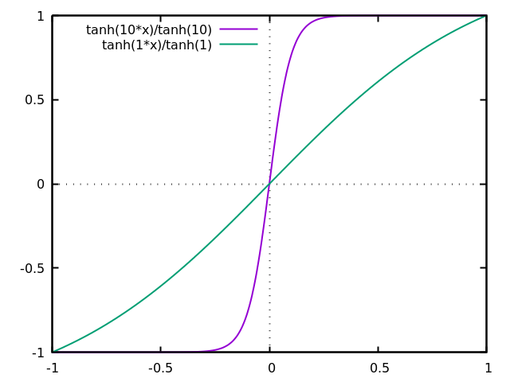
In the figures below, the first row contains the result of applying the contrast change, and the second row the dithering of each image.
| $\lambda=0$ | $\lambda=3$ | $\lambda=7$ | $\lambda=\infty$ |
| 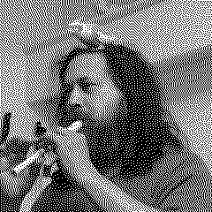 | 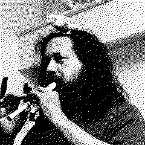 | 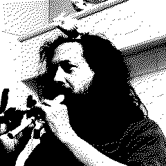 | 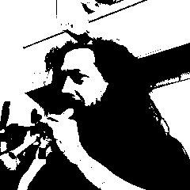 |
For the linear filtering, we consider a family of filters $k$ of the form $\widehat{k}(\xi)=|\xi|^\mu$ for $\mu\in[0,2]$, acting over images of zero mean, suitably normalized to conserve the second moment of the image. These filters interpolate continuously between the identity ($\mu=0$) and minus the Laplacian operator ($\mu=2$). The case $\mu=1$ can be called linear retinex. For $\mu<0$, this is called the Riesz scale space.
| $\mu=0.1$ | $\mu=0.5$ | $\mu=1$ | $\mu=2$ |
|
| |||
| 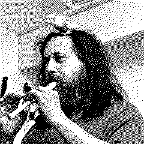 | 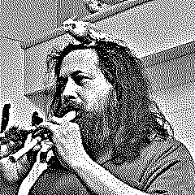 |
| 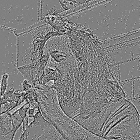 |
Notice that the Laplacian is locally constant nearly everywhere, except just around the edges. Thus, dithering this image results in a checkerboard pattern of density $50\%$, but with a characteristic bias around the edges which renders the structures visible.
Now, forget a moment about the dithering step and consider only linear filtering and thresholding. In modern parlance, thresholding with linear pre-processing would be called single layer convolutional neural network with Heaviside activation function.
More precisely, we take an image of zero mean, apply a linear filter, and threshold the result at 0.
Let us see how changing shape of the kernel produces different effects. We use the following radial kernels (we omit the normalization factors in this table):
| name | formula |
| Gauss | $G_\sigma(r) =\delta-\exp\frac{-r^2}{2\sigma^2}$ |
| Laplace | $L_\sigma(r) =\delta-\exp\frac{-r}{\sigma}$ |
| Cauchy | $C_\sigma(r) =\delta-\frac{1}{\sigma^2+r^2}$ |
| Riesz | $\widehat{R_\sigma}(\rho)=\rho^\sigma$ |
| truncated inverse-log | $Z_\sigma(r)=T_\sigma\frac{1}{\log(r)}$ |
| log-Cauchy | $Q_\sigma(r)=-\log(\sigma^2+r^2)$ |
These filters are all positive, so the effect they produce is blurring the images. For this application we apply them to the Laplacian of the input image (or, equivalently, we filter the image by the Laplacian of these kernels).
| 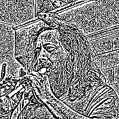 | 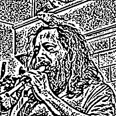 | 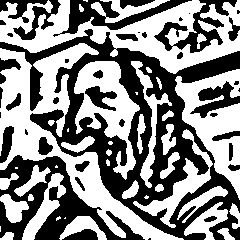 |
| $G_{0.5}$ | $G_{1}$ | $G_{3}$ |
| 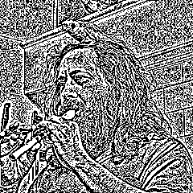 | 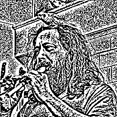 | 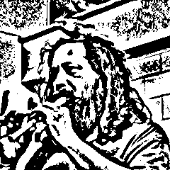 |
| $L_{0.5}$ | $L_{1}$ | $L_{3}$ |
| 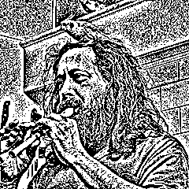 | 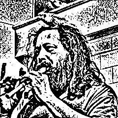 | 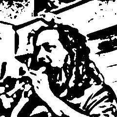 |
| $C_{0.5}$ | $C_{1}$ | $C_{3}$ |
| 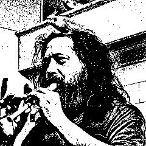 | 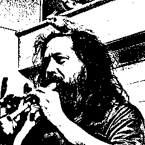 | 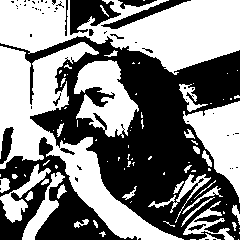 | |
| $Z_{0.01}$ | $Z_{0.10}$ | $Z_{0.20}$ | $Z_{0.50}$ |
| 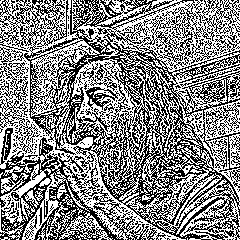 | 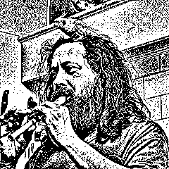 | 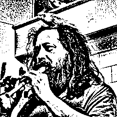 | |
| $Y_{0.01}$ | $Y_{0.10}$ | $Y_{0.20}$ | $Y_{0.50}$ |
| 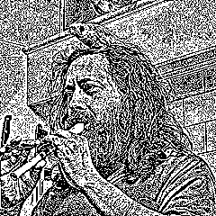 | 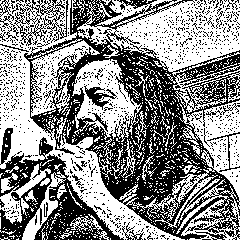 | 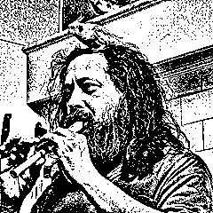 | 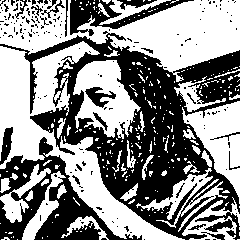 |
| $Q_{0.01}$ | $Q_{0.10}$ | $Q_{0.20}$ | $Q_{0.50}$ |
Notice that some of these images (e.g., $Y_{20}$ and $Q_{20}$) could pass ass ``dithering'', but with sharper edges. However, they are simply a thresholding of the image after a linear filter, where the kernel has been chosen carefully.
This is just a small exploration of a huge family of linear dithering methods to produce binary images, that contains thresholding and dithering by error diffusion as particular cases.
This technique also works for color images, by treating each RGB channel independently, and producing a 3-bit palette at the end. Compared to traditional dithering error diffusion, it allows a much higher resolution, at the price of a considerable loss in color fidelity, due to saturation. However, the saturation is much less than for a brutal per-channel binarization. See, for example, the blue eyes in this color image:
dither barb.png barb-dit.png plambda barb.png x,l | blur z 0.15 | plambda - '0 < 255 *' -o barb-lin.png plambda barb.png 'x x
PS: all the experiments on this note are generated from comments extracted of the original .tex source file.

{kind=link}
{kind=link}
{kind=link}
{kind=link}
{kind=link}
{kind=link}
{kind=link}